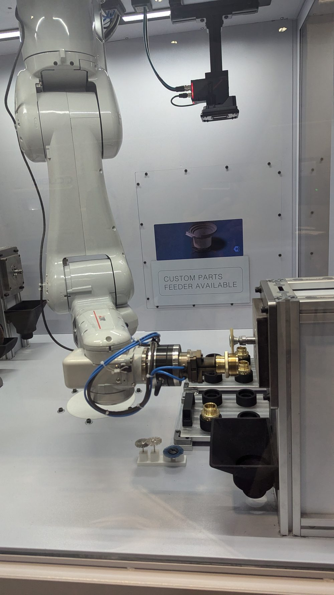
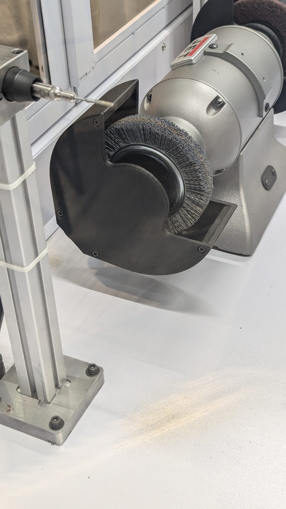
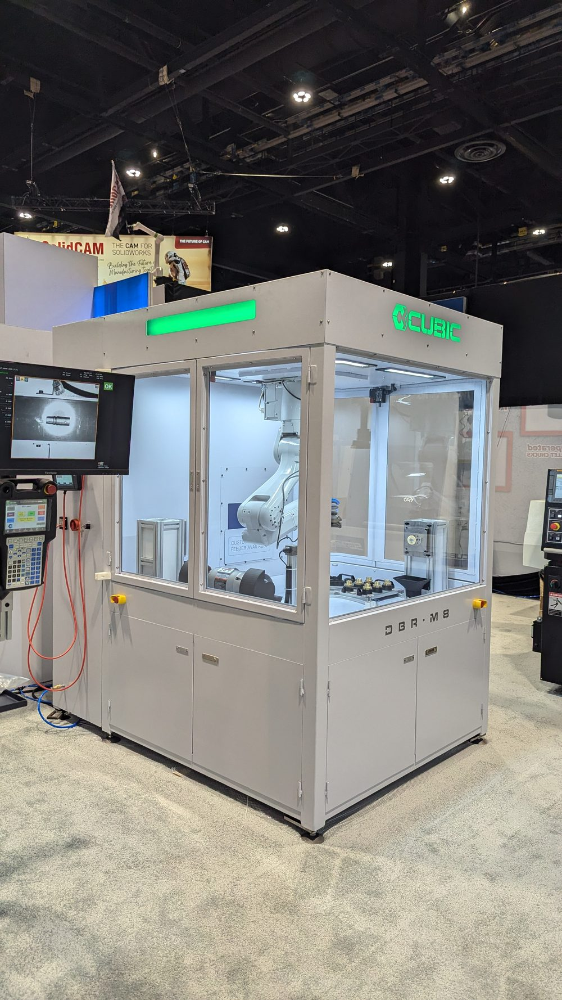

Force-Controlled Finishing
Recipe-driven robotic deburring cell for fastener and connector work.
A self-contained deburring, polishing, and finishing cell built around force control: a six-axis robot manipulates the part against fixed tool stations while a force/torque sensor governs contact at the edge, and operators create new recipes within a part family without writing robot programs. Exhibited publicly at IMTS 2024 in Chicago.
Problem
In a lot of machine shops the deburring bench is the bottleneck. Cutting is automated and measured; finishing is a person with a file, a brush wheel, and a subjective standard. It is slow, it varies between operators and between shifts, and it is the step most likely to send a part back.
Automating it is harder than automating a pick-and-place because the process is defined by contact, not position. A path taught in pure position control either misses the edge when the part sits a few thousandths high, or digs in and burns when it sits low — and stock removal varies with wheel wear over a shift.
Architecture
- A six-axis robot carries the part to fixed tool stations rather than carrying a tool to the part — the heavy, dirty, vibrating equipment stays bolted down and only the lightweight part moves.
- A force/torque sensor closes the loop on contact, so the robot applies a commanded force at the edge instead of driving to a commanded position. Position error and wheel wear are absorbed by the force loop.
- Multiple tool stations inside one enclosure let a single part visit brush, wheel, or grinder in sequence without leaving the cell or being re-fixtured.
- A custom part feeder and nest fixture present parts in a known orientation, with machine vision available for inspection or to guide the robot to the part.
- Dust collection is built into the same enclosure, which keeps abrasive debris off the shop floor and out of the robot's joints.
- A dedicated operator screen holds the deburring sequences as recipes, so a new part within a family is a data change rather than a robot program.
Why Force Control Is the Whole Design
Force control is what lets the rest of the cell be simple. Because contact force is regulated, the part nest does not need to hold micron-level repeatability, the tool stations do not need compensating slides, and the recipe does not need re-teaching every time a wheel wears down. The compliance that a human hand provides naturally is provided by the sensor loop.
It also decouples quality from speed. The robot can move between stations fast, because the only place precision is required is at the moment of contact — and there, precision is being enforced by force feedback rather than by how carefully the path was taught.


Operator Model
The cell is aimed at shops that do not employ a robot programmer. That constraint drove the interface: deburring sequences are stored as recipes tied to a part family, and adding a similar part means entering its parameters, not opening a teach pendant.
A cell that requires the integrator to come back for every new part number quietly stops being used, and nobody files a complaint about it — it just sits.
Contribution
I worked on the controls and robotics side of the cell — robot programming and motion, force-control behavior, vision setup, part feeding and fixturing integration, safety configuration, operator screen flows, and commissioning and live demonstration at the show.
The DBR-M8 is a Cubic Machinery product built by a team. My scope was the controls and robotics; the mechanical design, enclosure, and product engineering were colleagues' work.
Why the part moves, not the tool
This is the decision that shapes everything downstream. It costs payload capacity and limits part size, and for large workpieces it would be the wrong call.
For fasteners and connectors — small, numerous, and handled in families — it pays back immediately: one robot reaches many processes, spindles and grinders stay rigidly mounted where their vibration does no harm, dust extraction has one fixed place to pull from, and adding a process to the cell means adding a station rather than redesigning the end effector.
The Cell

Photographs taken at the Cubic Machinery exhibit, IMTS 2024, Chicago — a public trade show. Product capabilities described here match Cubic's own published product information. No customer names, customer parts, or proprietary process data appear in this case study.